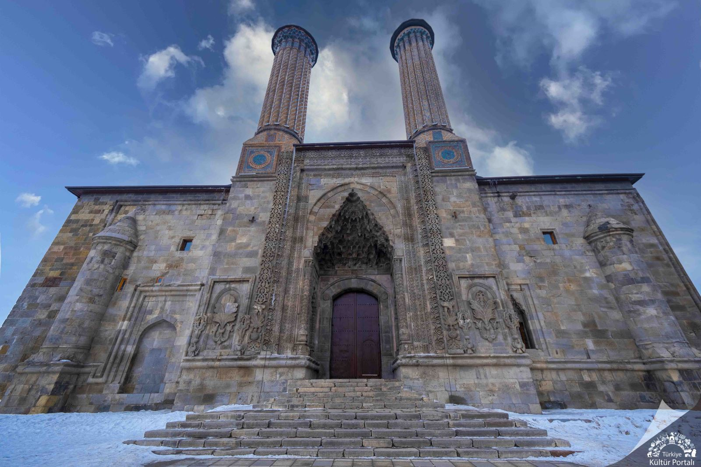
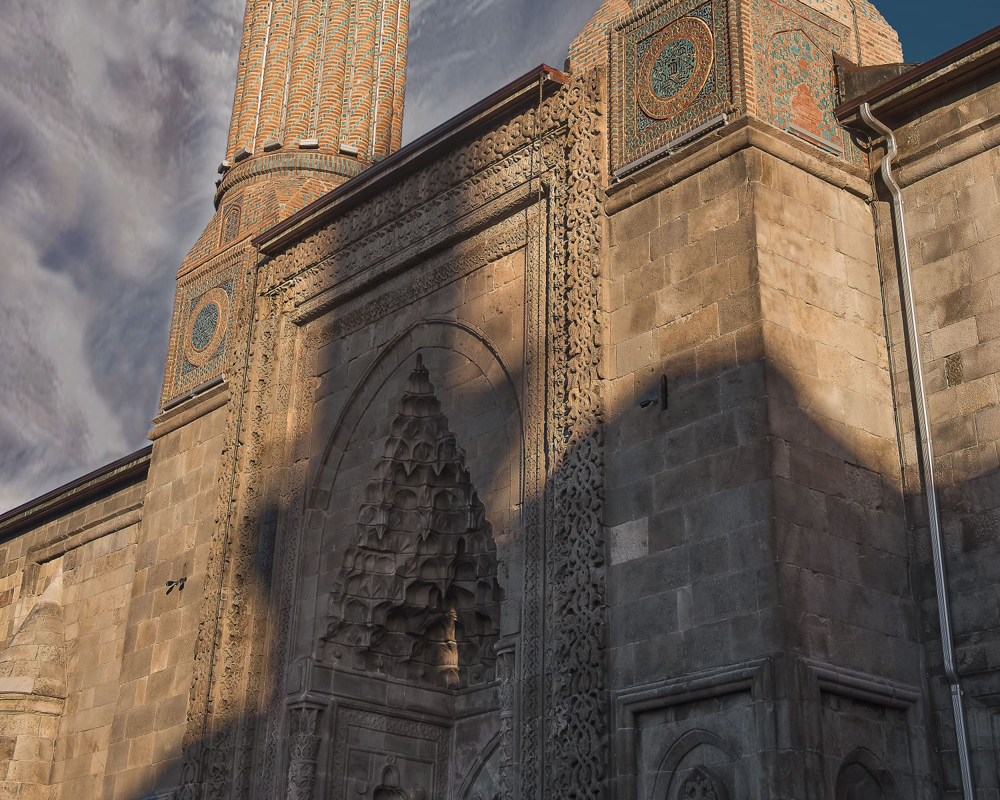
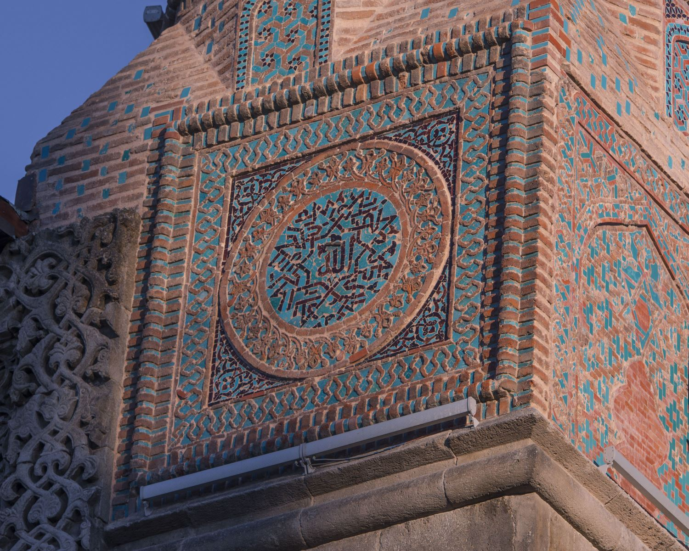
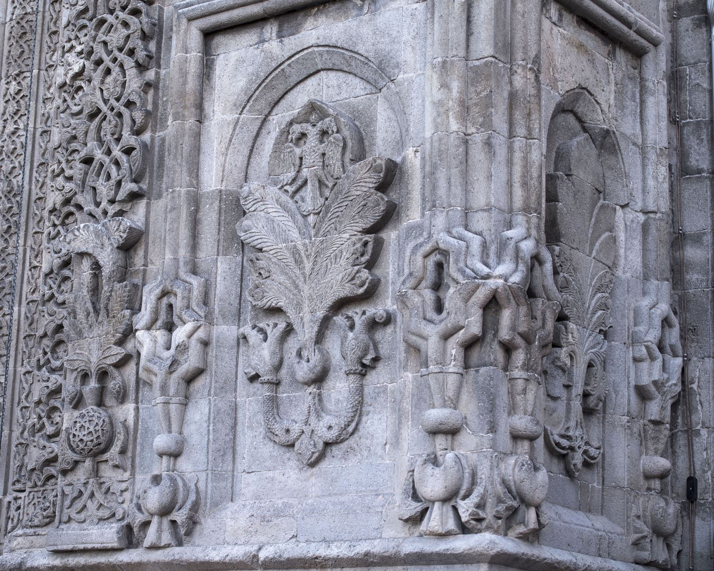
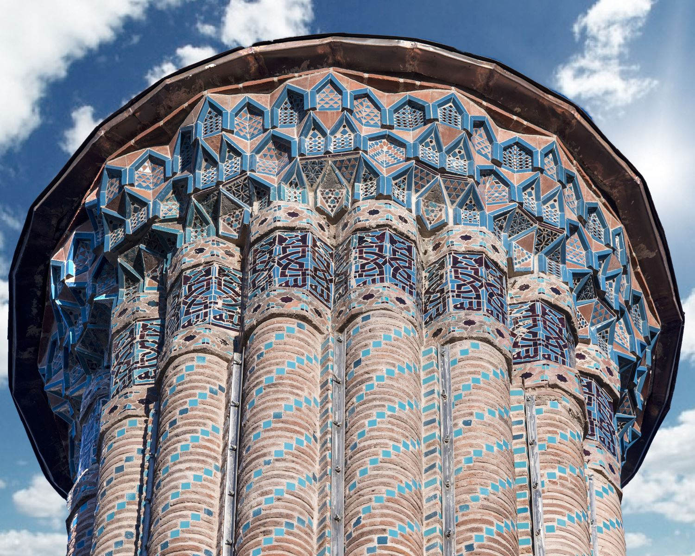
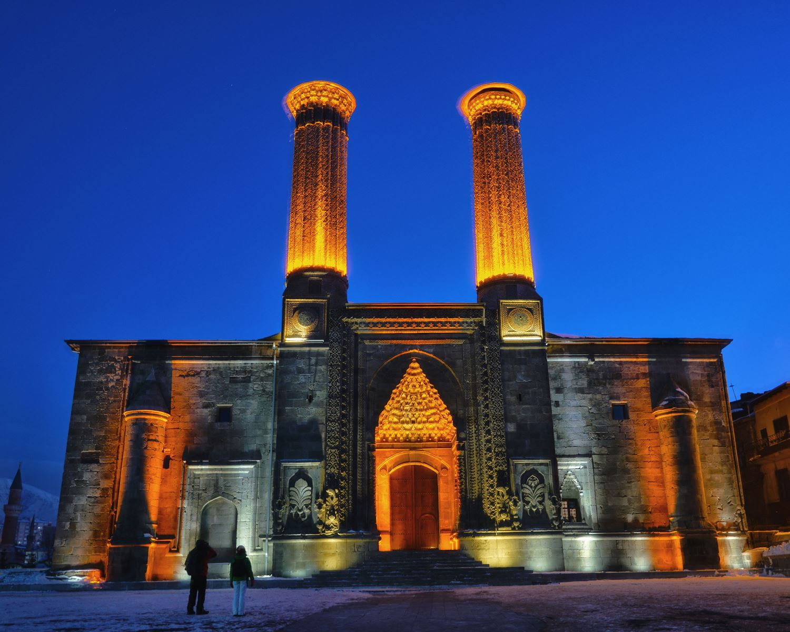

Çifte Minareli Medrese - Erzurum
Çifte Minareli Medrese Özellikleri Nelerdir?
Çifte Minareli Medrese Erzurum'un sembolü haline gelen bir Selçuklu eseridir. Genelde 13'üncü yüzyılın sonlarında yaptırıldığı kabul edilmektedir. Selçuklu Sultanı Alaaddin Keykubat'ın kızı Hundi Hatun veya İlhanlı Hanedanları'ndan Padişah Hatun tarafından yaptırılmış olabileceği düşüncesi ile adına Hatuniye Medresesi de denilmektedir.

Yaklaşık 35x46 metre boyutlarında olan medrese iki katlı, dört eyvanlı ve açık avlulu medreseler grubunun en önemli örneğidir. 26x10 metre ölçülerindeki avlusu, dört yönden revaklarla çevrilidir. Avlunun her iki tarafında öğrenci ve öğretmen odaları sıralanmaktadır.
Medresenin zemin katında on dokuz, birinci katında ise on sekiz odası bulunmaktadır. Girişin batısındaki kare mekân, mescit olarak kullanılmıştır. Güneyde ana eyvanla birleşen, altında mumyalığı bulunan kümbet, Anadolu'da çağdaşları arasındaki en büyük türbe olma özelliğine sahiptir. Gövdesi on iki köşeli olan kümbet dıştan külah, içten kubbe ile örtülüdür. Saçağı, süsleme şerit ve silmelerle bezenmiştir.

Çifte Minareli Medrese'nin özellikle taç kapısında bulunan bezemeler, Selçuklu taş süslemesindeki derinliğin ve estetik anlayışın muhteşem örneklerini oluşturmaktadır. Bezemelerde ağırlıklı olarak bitkisel ögeler kullanılmıştır. En çok palmet ve rumi motifleri kullanılırken, her ikisinin de birbiri ile uyumu dikkat çekmektedir.

Taç kapının batı tarafına Orta Asya Türkleri'nin simgesi olan çift başlı kartal, ağzı açık iki yılan ve dilimli yapraktan oluşan hayat ağacı işlenmiştir.

Doğu tarafında bulunan simetriğinde ise yaprak ve kartal işlemesi yer almamaktadır. Taç kapının iki yanında yükselen sırlı tuğla ve tuğla ile örülü, motiflerle bezeli minarelerin boyu 26 metredir.

Minarelerde turkuaz rengiyle dikkat çeken panonun içinde Arapça "Allah" yazmaktadır.

Harap halde iken Osmanlı padişahlarından 4. Murad tarafından tamir ettirilen ve bir süre "tophane" olarak kullanılan medrese, 1942-1967 yılları arasında Erzurum Müzesi, günümüzde ise hem müze hem de resim sergi salonu olarak hizmet vermektedir.
Sivas, Konya, Kayseri, Erzurum ve Kırşehir'deki diğer önemli Selçuklu medreseleriyle birlikte Erzurum Çifte Minareli Medrese, 2014 yılında "Anadolu Selçuklu Medreseleri" başlığı altında UNESCO Dünya Mirası Geçici Listesi'ne dahil edilmiştir.
Kaynak: Erzurum Gezi Rehberi Kitabı - Tablet İletişim Yayınevi, TDV İslam Ansiklopedisi